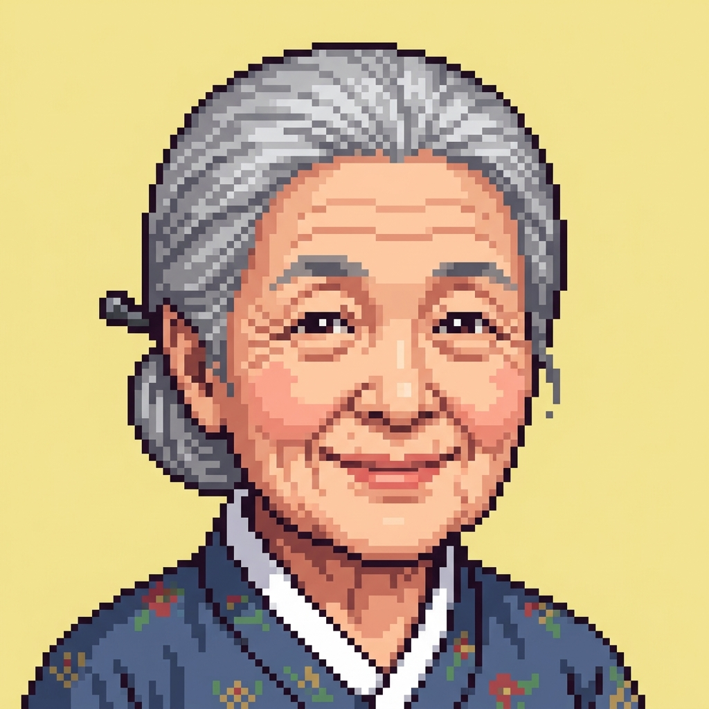

대피소 서바이벌
우리 동네 대피소, 진짜 갈 수 있을까?
재난 경보가 울렸습니다!
지도 앱에 표시된 대피소까지 무사히 갈 수 있을까요?
당신의 캐릭터를 선택하고 대피를 시작하세요.
캐릭터 선택 (SELECT CHARACTER)
민우 (지진 / 휠체어 이용자)
주요 특성: 엘리베이터 오작동 대비, 계단 피난 대기, 무단차 보행로 대피
평화로운 오후, 갑자기 집이 격렬하게 흔들립니다. 여진 발생 전 운동장 대피소로 대피하라는 문자가 옵니다.
현아 (침수 / 영유아 동반)
주요 특성: 아기 띠 이동 시 기동성 지연, 기저귀 교환실 및 따뜻한 식수 필수
창밖 도로에 흙탕물이 급격하게 차오릅니다. 비상 가방을 메고 근처 강당 대피소로의 대피 명령을 수신했습니다.
마이클 (화학재난 / 외국인 유학생)
주요 특성: 한글 재난문자 해독 필요, 영문 안내 이정표 필수, 가스 회피 고지대 이동
동네에 가스 냄새가 나고 화학 공장 사이렌이 울립니다. 해독 불가한 한국어 대피 재난 문자가 도착합니다.

김순임 (폭염 / 독거 노인)
주요 특성: 어플 쉼터 검색 차단, 유선 쉼터 연락망 의존, 급격한 탈수 방지 식수 보충
에어컨이 고장 나 방 안 온도가 38도까지 올랐습니다. 어지럼증을 느끼고 무더위 쉼터로 대피해야 합니다.
👵
09:38
현재: 출발지
대피 결과
대피 성공!
대피소에 무사히 도착했습니다. 하지만 실제라면 어땠을까요?
💡 현장 조사에서 발견한 사실
주소만으로 대피소를 이용하는 데는 한계가 있습니다. 실제 대피층, 전용 경사로, 야간 대표 연락처 등 구체적인 데이터가 꼭 있어야 합니다.